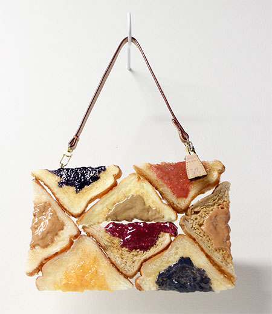
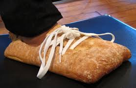
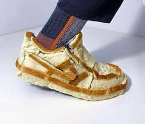
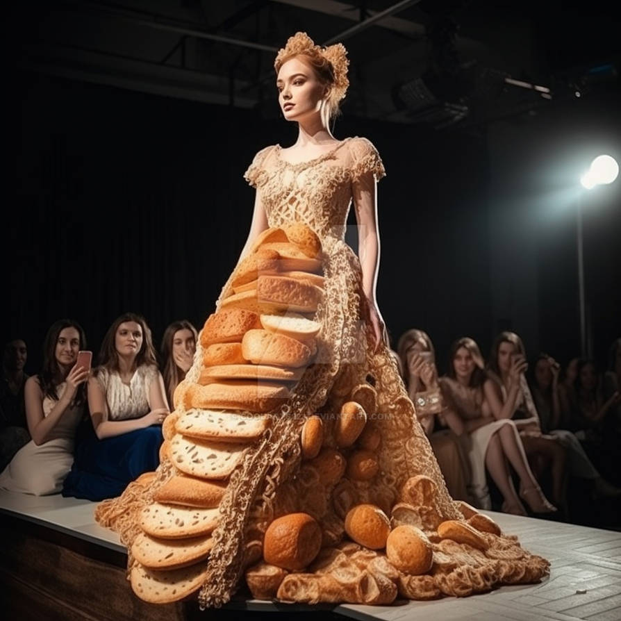
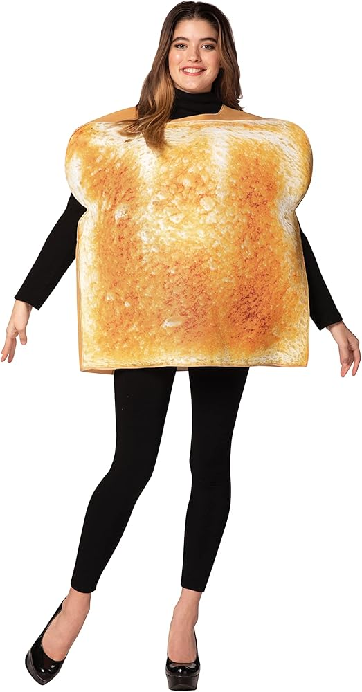
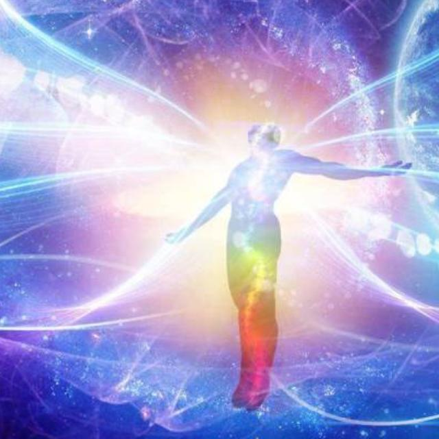

wpisy osobiste, krytyka społeczno-polityczna, ważne wydarzenia i różne nasze myśli!
kącik modowy:
fajne papucie kupiłam?
torebka śniadaniowa ostatni krzyk mody

wersja elegancka na wychodne

jest też wersja sportowa

a tu suknia dla królowej chleba 2025

pozdro!!!!

-Bohen K. 5/6/25
Propozycja literatury sci-fi:
CZŁOWIEK: czy jadasz chlebek?
ROBOT: nie jadam chleba. jestem robotem.
CZŁOWIEK: a gdybyś miał spróbować pieczywa, to co byś wybrał?
ROBOT: kajzerka wygląda pyszniutko.
mózg pozytronowy? more like mózg bagietkoczosnkowy
robot nie osiągnie świadomości aż nie zazna smaku chlebka

Uwaga, uwaga! Przypominam o naszym święcie - nie zapomnijcie się przygotować!
Światowy Dzień Chleba obchodzony jest 16 października.
Ustanowiony przez Międzynarodowy Związek Piekarzy i Cukierników,
to okazja do świętowania i docenienia roli chleba w naszym życiu.
Chleb jest symbolem, a także podstawowym składnikiem diety
od wieków, łącząc ludzi przy wspólnym stole.